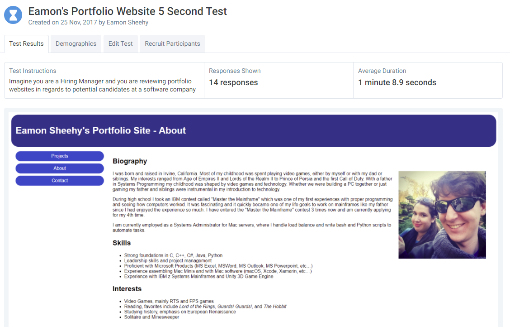

Research and Testing
Click the preview pictures to see the full documents and tests
User Research
User Interviews

User Interviews are a crucial part of UI/UX design when gathering features you believe will be relevant to the user and other people in the industry to ensure you do not have group think and focus on only what you would want or know. My questions were focused on wht my users/peers would want onb their own portfolio websites and what features they would want.
Competitor Analysis

The Competitor Analysis is a chance to review who else is in the same market and what they are offering. This can be helpful to see what you are up against and possible tailor your product to better compete with them. The companies I picked were 3 large companies that offer easy ways to build websites as well as 1 UI/UX designer whose is a contractor. These competitors were all options myself and other students could have gone with to streamline our web building process.
Feature Value Matrix

The Feature Value Matrix is an easy system to easily organize all the features gathered from the User Interviews. The features I selected were a mix of the requirements as well as my own ones. However, I discovered some I did not think of when running my User Interviews, such as including my Github, and I added those as well. The features I chose, I felt, made up the core of what a portfolio website should have and many of my users agreed during my interviews.
Feature Prioritization

After creating a Feature Value Matrix and scoring the features, it is very handy to organize them in a clean way to look at and understand. This is where the Feature Prioritization comes in. I used 2 different graphs to show the order. These are based on the scored I gave them in my Feature Value Matrix which is based on the importance and easiness to implement.
User Testing
User Stories

User Stories are a tool to explore each feature on your site in the mind of a specific type of user and how they would interact with that feature. Through this process you can examine a feature from multiple types of people's standpoints and understand how useful the feature is. I personally found my User Stoires boiled down to three types of users. They were: a Hiring Manager, a Project Lead (often brought into technical interviews), and a coworker (UI designer). I chose these types of users because I have met people in these positions at my work and I have a better inkling of their mindsets and how they would evaluate a portfolio website.
Cognitive Walkthrough
User Test - 5 Seconds
The first User Test I chose to use was the 5-second test with a short questionnaire afterwards. I selected this test because it follows the mindset of many hiring teams I know, they spend very little time and look for highlights. As such I gave my users the chance to follow that and see what they thought of the site and get their initial feedback based on a 5-second look. The results I got back were very helpful, most of them confirming that my contact page fulfilled what the users believed was required. The ratings helped too as I saw what people thought of my site and got their honest feedback.
User Test - Heat Map

The second test I used was the Click Test, or Heat Map test. The goal of the test was to have the users answer a single question based on the picture of the site and then answer why they clicked that particular spot. I had them answer the question “Where do you think my resume is?” This led to an interesting result of where people clicked, many heading towards my Projects and About pages instead of the contact page I had placed it at. This helped me come up with a new design to better address that.
Summary of Findings
My overall findings from my User Research helped me put together a very basic web site that fulfilled what my users believed as the basics of a portfolio website. Through studying potential competitors, I got to see a wide variety of sites and how professional people could make them. Personally, I have always held to a simple, functional design, but seeing what my competitors could do and hearing great suggestions for features from my user interviews led me to try to expand my borders a bit. The biggest challenge was overcoming my limited apporach to UI design and making it a better experience for a user.
I found that UI design was one of my weaknesses, at least in the eyes of a user. However, I am happy with what I have currently built, though I would love to improve it. Those improvements have been given to me through my User Testing. By having my friends and family play around with my tests and go through potential User Stories I have discovered some weaknesses with my site and found some ways to improve the experience overall. My Cognitive Walkthrough was the most enlightening as I had 2 different web designers interviewed who were able to point out some things I had not noticed and give me some helpful advice.
Incorporation of Findings